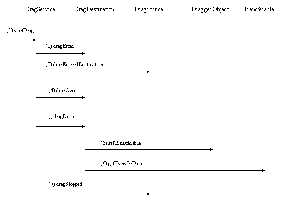

XPToolkit drag and drop
Written by Eric Vaughan
Modified by Chris McAfee
Mon Feb 8 16:08:03 PST 1999
Simple Use cases
- Drag messages around mail folders and newsgroups
- Drag folders and newsgroups around
- Dragging a message, folder, newsgroup, or news host to the Trash folder deletes it
- Drag address book cards around address books and mailing lists
- Drag mailing lists to address books
- Drag files from the desktop to the message composition window to attach it.
- Drag addresses from the message display pane into mailing lists (we should also create
cards that
- way but we don't).
- Drag newsgroups and address books to reorder them in the list.
- Dragging bookmarks and placing them in folders
- Drag and drop my "address info" into a form and it "pre fills" the
address
info (in IE 5 beta)
- Drag a link from a web page into addressbook
- Drag an image from web to paint program (photoshop?)
- Drag a thumbnail version of a site into main window and back (visual
bookmarks)
- Drag a url to the personal taskbar - into subfolders (PC 4.0 only ..)
NGLayout requirements
- Drag and drop of HTML elements within a document area (supported today in 4.x)
- Drag and drop of HTML elements between two document areas in different frames in the
same top-level window (not supported in 4.x)
- Drag and drop of HTML elements between two independent raptor windows (not supported in
4.x)
- Drag and drop from the native desktop onto a raptor content area (supported in 4.x via
onDragDrop)
- Drag and drop of HTML elements from raptor document area into another application (i.e.
Word)
- Drag and drop of HTML elements onto the desktop (limited support for this in 4. for IMG
and A elements)
High Level Design
This is a very preliminary design for drag and drop within NGLayout.
Design goals:
- Simple. Simple. Simple. It must be simple enough so it can be implemented
in a reasonable amount of time. Yet powerful enough not to paint us in a corner.
- Compatible. It can't be completely on another planet. It should have a
familiar API that is easy to use and learn. And should mesh well with other systems we may
want to talk to. One obvious one is JAVA. In all likelyhood there is a good chance we will
be interfacing with java applets.
- Take advantage of other people's work. Sun has already written a lot of
platform specific code to deal with Transferables and DataFlavors. While we may not be
able to use this code directly we do have access to and can see how it was implemented.
With this in mind here is my first cut. For simplicity it is shown in a
java like syntax.
DragSource - Interface
The drag source is an interface representing the source of a drag
operation. Its responsible for supplying a object that can get the data in differing
formats called DataFlavors. During the drag it receives events when the dragged object
enters or leaves a drop location (DragDestination). It is also responsible for telling the
drag session what kind of actions it can do such as move, copy, link.
- Transferable getTransferable() - Returns an object that can be
used to retrieve the data.
- int dragEnteredDestination(DraggedObject o) - Called when a
DraggedObject is dragged into a dragDestination. Returns and integer describing possible
actions.
- void dragExitedDestination(DraggedObject o) - Called when a
draggedObject is dragged out of a dragDestination.
- void dragStopped(DraggedObject o, int action) - Called when a drag
session has finished with the action that occured.
DragDestination - Interface
The destination represents a target of drop events. It is notified when a dragged
object enters, leaves, or is dropped on it.
- int dragEnter(DraggedObject o, int x, int y) - Called when a
draggedObject is dragged into this destination. X and y are the coordinates in the
destination Frame. Returns the actions that can be performed.
- int dragOver(DraggedObject o, int x, int y) - Called when a
draggedObject is dragged inside this destination. X and y are the coordinates in the
destination Frame. Returns the actions that can be performed.
- void dragExit(DraggedObject o, int x, int y) - Called when a
draggedObject is dragged outside this destination. X and y are the coordinates in the
destination Frame.
- boolean dragDrop(DraggedObject o , int actions) - Called when a
drop occurs with the current set of actions. Returns true if sucessfull.
DraggedObject - Interface
This represent the dragged object during a drag session. It knows the source and
destination as well as managing when the user changes the current action by pressing ctrl,
shift, alt, ect.
- Image getImage() - Returns the image that represents the dragged
data. This is uses extensively on the NeXT by drag destinations to show the user what
things might look like if the object were dropped.
- Point getDragOffset() - Returns the x,y offset of the dragged
image from the cursor.
- Transferable getTransferable() - Returns an object that can be
used to retrieve the data.
- DragSource getSource()- Returns the DragSource if the drag session
occured in the same address space. If it source is not in the same address NULL is
returned.
- DragDestination getDestination()- Returns the DragDestination the
dragged object is currently over. Returns NULL if the destination is not in the same
address space.
- Frame getDestinationFrame()- Returns the Frame we are dragging
into. Returns NULL if the Frame is not in our address space.
DragService - Global
This is a global object that is called whenever a drag session needs to
be started.
- startDragSession (DragSource, Point startLocation, Point imageOffset,
Image image, boolean flyback) - Starts a modal drags session.
- DragSource - the source of the drag.
- StartLocation - the x,y starting location.
- ImageOffset - the offset the image should be from the cursor
- Image - the image to drag (Gif)
- flyback - if true when the drop fails the image will fly back to the source.
Transferable - Interface
An object that can get the data from the source in different types
(Flavors)
- DataFlavor[] getTransferDataFlavors() - Get the list of data
flavors that this transferable supports.
- boolean isDataFlavorSupported(DataFlavor f) - See if the given
flavor is supported
- Object getTransferData(DataFlavor f) - Given a flavor retrieve the
data.
DataFlavor
A particular type of Data.
- DataFlavor(String mimeType, String humanPresentableName)
- String getMimeType()
- Sting getHumanPresentableName()
- public static Flavor PLAIN_TEXT - A basic flavor representing
plain text in UNICODE.
- public static Flavor HTML - A flavor representing HTML source in
UNICODE.
Actions
Types of actions that can be done on the drag.
| 1. none |
0 |
| 2. copy |
1 |
| 2. move |
2 |
| 3. link |
4 |
| 4. custom |
8 |
Use Case
User drags a file from a source to a destination
- User clicks on the drag source and begins dragging
- Drag enters the drag destination
- User drops
Event trace

- When the user begins dragging startDrag is called on the global
drag service. StartDrag is called with several arguments.
- dragSource - The source of the data.
- startLocation - The starting x,y location.
- Image - The image that will be displayed next to the cursor when
dragging. The third is the
- imageOffset - This is the offset in pixels the image will be from
the cursor. Very important so the image isn't over the cursor or something.
- flyback - This allows the image to flyback to the source if the
drop fails (NeXt like).
- When the drag target is entered dragEnter is called on the
dragDestination by the dragService with the dragged object. dragEntered must return an
integer representing the possible actions this destination can accept. Such as copy, move,
or link. This is done by OR values together. In this example it returns copy|move.
- dragEnteredDestination is called on the dragSource. Who returns
what operations it supports in this case it only return copy. At this point we can
determine what actions are possible by ANDING the result of dragEnter on the
DragDestination and the DragSource. The result is only copy is possible.
- dragOver is called on the dragDestination. It returns copy|move.
Notice we are again returning what what is possible again. This it very usefull if our
DragDestination implements its own hotspots and manages them itself.
- The user releases the mouse. The only possible action is copy
(Result of ANDING the source and destintation actions).
- The dragDestination gets the Transferable from the draggedObject and
calls getTransferData to get the dragged data.
- dragStopped is called on the dragSource with the ANDED actions.
Some ideas on how to use this in NGLayout
Here are 2 different ways this architecture can be implemented in
NGLayout. I'm not an expert on NGLayout so if I'm completely off base let me know.
- Any frame that wanted to implement drag and drop could implement the
DragSource or DragDestination appropriately. The advanage to this is Frame would not have
to be changed. The disadvantage is subclassing would be required for drag and drop.
- All frames would have a method setDragSource() and setDragDestination().
The advantage of this is if a user wanted to make a text field on a web page receive drop
events all they would have to do is call setDragSource() on the button in javaScript
rather that subclassing.
Owners
NGLayout only work - Eric Vaughan
PC - ????
MAC - Steve Dagley
Unix - Chris McAfee
Schedule
| Tasks |
Duration in days |
| TBD |
|
Dependencies
TBD